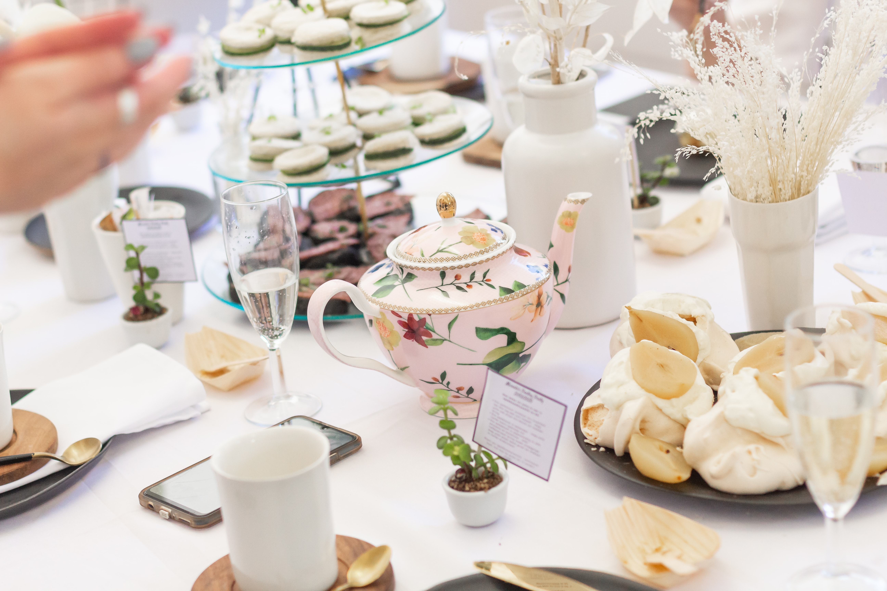

너무 무거운 간식은 오히려 하루를 망친다
너무 무거운 음식들 가령 기름지고 짜고 매운 음식을 먹는다면, 소화가 잘 되지 않아 컨디션 저하가 일어난다. 가까운 쾌락을 위해 하루의 컨디션을 포기하는 행위를 하지말자. 내게 좋은 간식이란 내 몸이 허락하는 선에서의 커피와 차 그와 같이 즐길 수 있는 가벼운 다과류다.
너무 무거운 음식들 가령 기름지고 짜고 매운 음식을 먹는다면, 소화가 잘 되지 않아 컨디션 저하가 일어난다. 가까운 쾌락을 위해 하루의 컨디션을 포기하는 행위를 하지말자. 내게 좋은 간식이란 내 몸이 허락하는 선에서의 커피와 차 그와 같이 즐길 수 있는 가벼운 다과류다.